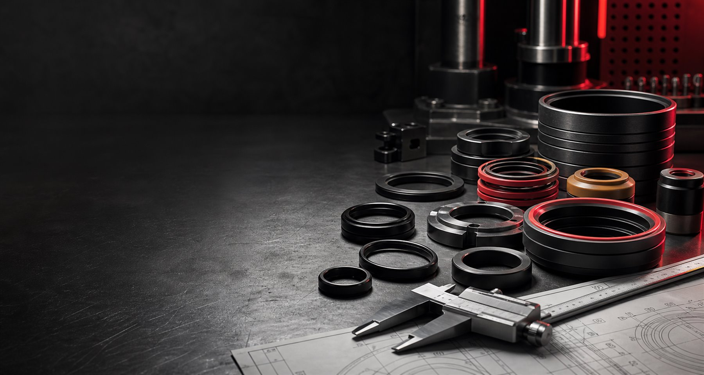
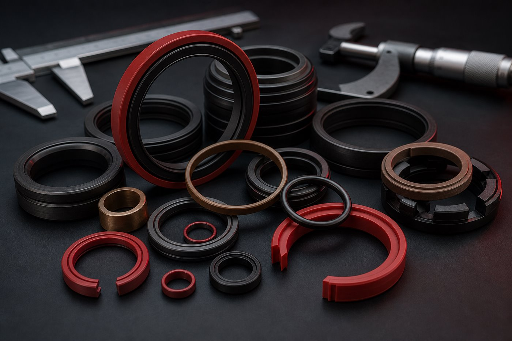
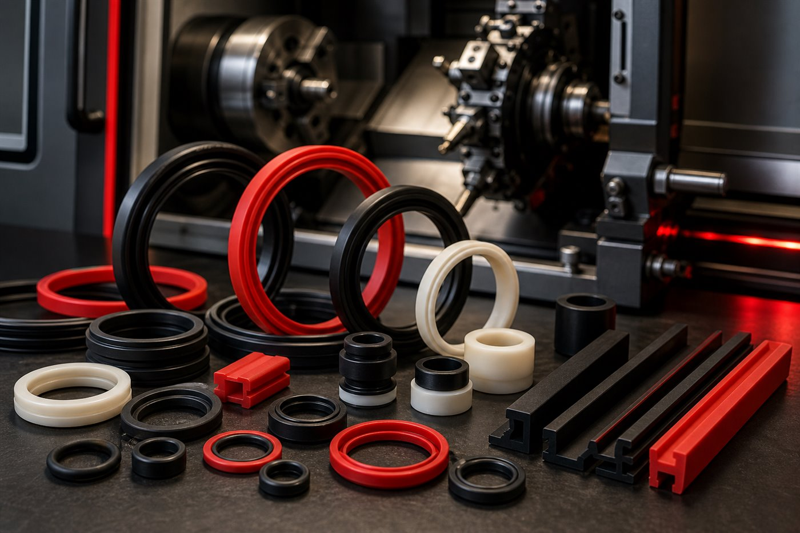
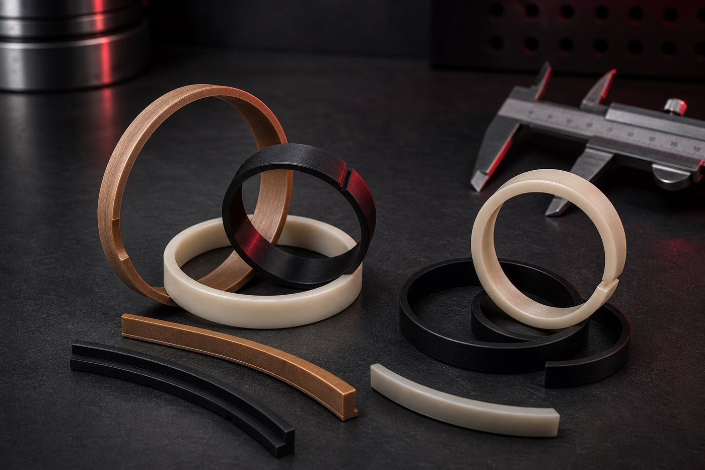
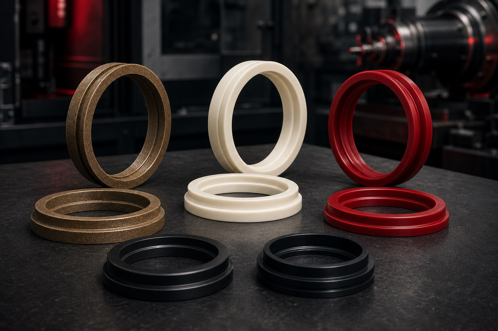
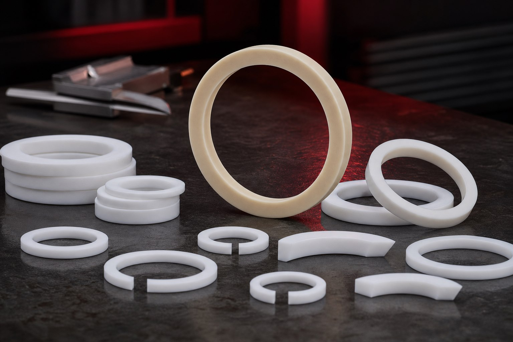
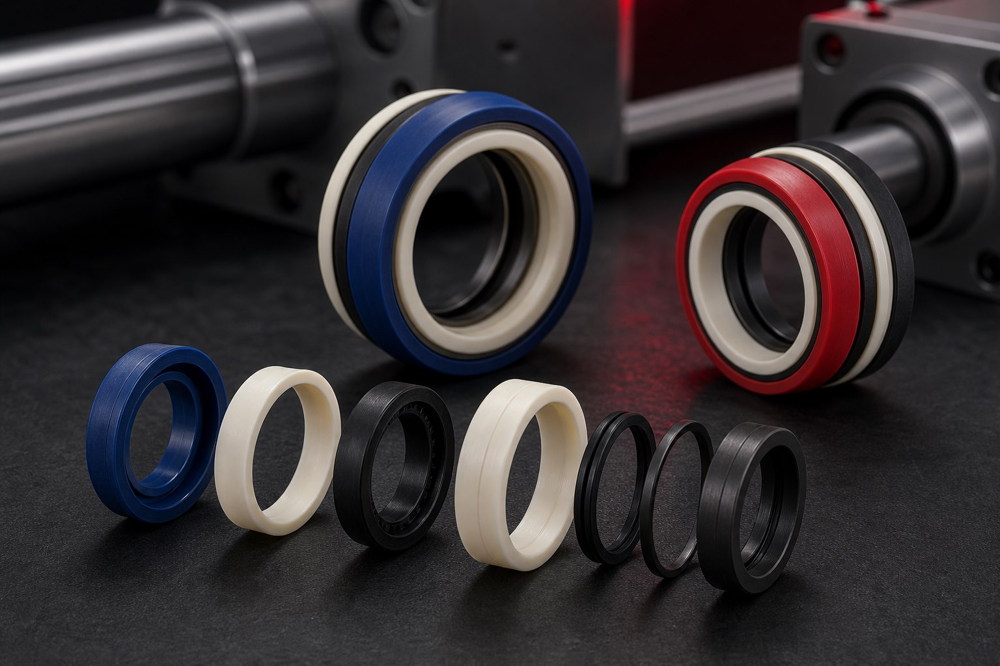
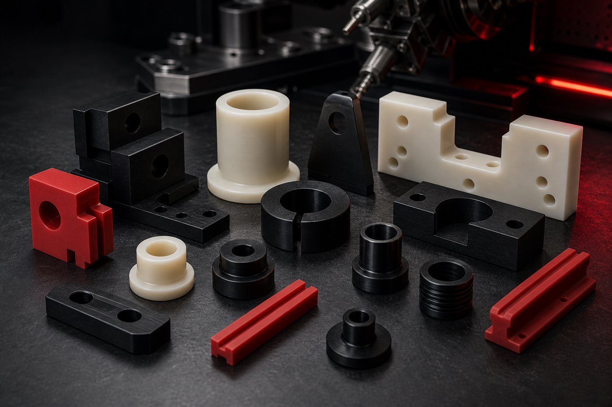
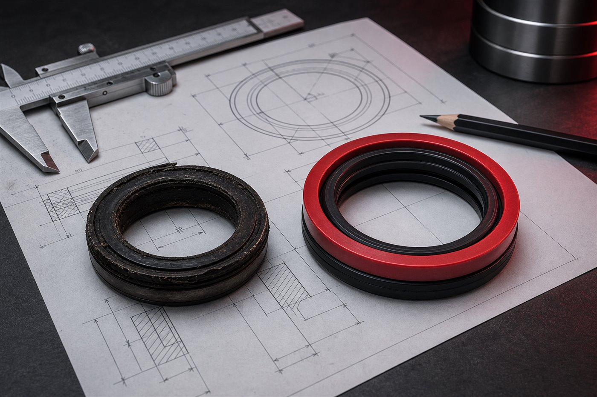
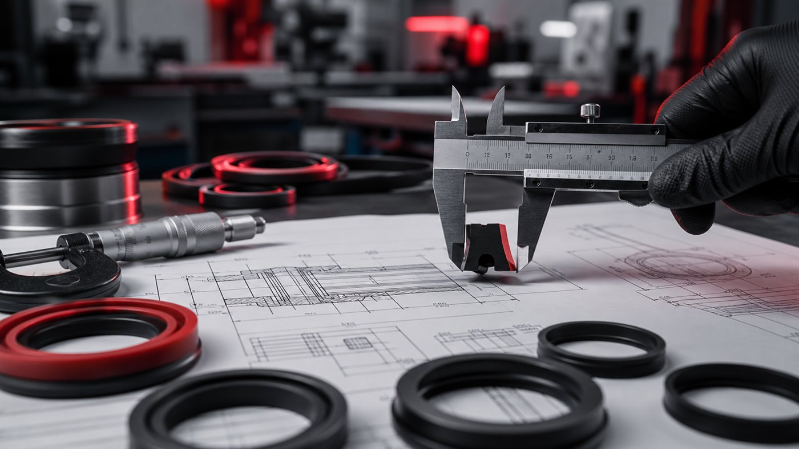

Fabricación técnica a medida
Sellos industriales a medida para quienes no pueden parar.
Parts Seals desarrolla y fabrica soluciones de sellado industrial para mantenimiento, reposición y aplicaciones técnicas, atendiendo a empresas que necesitan precisión, agilidad y confianza.
Fabricación a medida
Atención técnica
Piezas por muestra o dibujo
Agilidad en la cotización
Indicadores de confianza
Soluciones principales
De la reposición urgente al desarrollo técnico.
Atendemos demandas de mantenimiento, reposición y fabricación especial con foco en geometría, material y plazo de respuesta.
Fabricación a medida
Producción de sellos y piezas técnicas según muestra, dibujo o medidas de la aplicación.
Reposición industrial
Soluciones para mantenimiento y parada de máquina, con orientación para la sustitución correcta.
Sellado técnico
Análisis de presión, temperatura, fluido, movimiento y desgaste para mejor desempeño.
Soporte técnico
Soporte para especificar el material, perfil y geometría más adecuados para el equipo.
Productos y soluciones
Sellos para hidráulica, neumática y mantenimiento industrial.
Piezas fabricadas con atención dimensional para aplicaciones que requieren confiabilidad, repetibilidad y respuesta rápida.

Empaquetaduras
Perfiles de sellado para sistemas con movimiento y exigencia de estabilidad.
Cotizar ahora
Rascadores
Componentes para protección contra contaminantes y aumento de la vida útil del conjunto.
Cotizar ahora
Anillos guía
Guías para estabilidad, alineación y reducción de fricción en conjuntos móviles.
Cotizar ahora
DP y DH
Perfiles mecanizados en PTFE con bronce, poliuretano y otros materiales para diferentes condiciones de trabajo.
Cotizar ahora
Piezas back-up estándar
Arandelas y anillos de apoyo en PTFE puro para proteger y estabilizar el conjunto de sellado.
Cotizar ahora
Sellos compactos
Conjuntos compactos de sellado para aplicaciones que exigen alto rendimiento en poco espacio.
Cotizar ahora
Piezas técnicas a medida
Perfiles especiales, bujes, anillos y componentes según la necesidad de la aplicación.
Cotizar ahora
Desarrollo por muestra o dibujo
Recibimos referencia física, foto, medidas o dibujo para orientar la cotización.
Cotizar ahoraÁreas de actuación
Atención para sectores que dependen de operación continua.
Desde la industria de proceso hasta el mantenimiento pesado, Parts Seals apoya a equipos técnicos en la reposición y desarrollo de sellos.
Consultoría técnica
¿No sabe qué sello usar? Le ayudamos.
Cada aplicación tiene condiciones específicas de presión, temperatura, fluido, movimiento y desgaste. Nuestro equipo ayuda en el análisis de la pieza, el material y la geometría ideal para entregar una solución más segura y eficiente.
Hablar con un especialista
Materiales trabajados
Materiales de alta performance para diferentes condiciones de trabajo.
Alta resistencia mecánica y buena respuesta al desgaste.
Baja fricción y estabilidad para aplicaciones técnicas.
Bronce, grafito, T-46, carbono, molibdeno y fibra de vidrio.
Sellado técnico para aceite, grasa y aplicaciones industriales.
Alta resistencia química y térmica para aplicaciones severas.
Rigidez, estabilidad dimensional y buena maquinabilidad.
Material técnico ligero, resistente y de baja fricción.
Laminado técnico para bujes, guías y componentes especiales.
Piezas técnicas con rigidez, guía y resistencia dimensional.
Buena resistencia mecánica para componentes mecanizados.
Mayor rigidez y desempeño en aplicaciones exigentes.
Polímero de alta performance para condiciones críticas.
Biblioteca técnica
Aplicaciones, perfiles y datasheets de materiales.
Explore los materiales trabajados por Parts Seals y visualice documentos técnicos en portugués en un lector protegido, con marca de agua en toda la página.
Explorar materiales y datasheetsCómo funciona la atención
Un flujo claro para transformar una necesidad en pieza lista.
Usted envía la necesidad
Muestra, foto, medidas, dibujo técnico o descripción del equipo.
Nuestro equipo analiza
Evaluamos aplicación, geometría, material, urgencia y viabilidad.
Desarrollamos la solución
Definimos perfil, tolerancias y material más adecuados para el uso.
Producimos a medida
Fabricamos la pieza con foco en precisión y calidad dimensional.
Entregamos para su operación
La solución llega lista para apoyar mantenimiento, reposición o mejora.
Diferenciales
¿Por qué elegir Parts Seals?
Fabricación a medida
Piezas desarrolladas para la condición real de la aplicación.
Atención técnica
Diálogo directo para entender necesidad, material y geometría.
Agilidad en la cotización
Retorno objetivo para acelerar decisiones de mantenimiento.
Calidad dimensional
Atención a medidas, encaje y repetibilidad de producción.
Soluciones para mantenimiento industrial
Reposición y desarrollo con foco en reducir paradas.
Materiales de alta performance
Selección de compuestos según presión, fluido, desgaste y temperatura.
Galería de piezas
Visual técnico, limpio y enfocado en lo que importa: la pieza.
Reseñas de Google
Confianza construida en cada entrega.
Experiencias de clientes que reconocen nuestra precisión, conocimiento técnico y compromiso con la calidad.
★★★★★Tengo experiencia con piezas mecanizadas y sinterizadas y puedo afirmar que el trabajo de Bruna y del equipo de Parts Seals es de altísimo nivel. La empresa demuestra gran conocimiento técnico, utiliza materiales de primera y mantiene una excelente precisión en las tolerancias. Siempre entregan sellos y componentes personalizados con un acabado excelente y un rendimiento superior a la media. Se nota el profesionalismo y la pasión que ponen en su trabajo.
★★★★★¡Recomiendo Parts Seals! Mi amiga Bruna lidera una empresa destacada en la región de Piracicaba y Santa Bárbara, con la mejor relación calidad-precio en el mecanizado de piezas y sellos de alta precisión. Especialistas en PTFE, PU, NYLON, POM y otros polímeros, además de materiales sinterizados (DH y DP, entre otros), empaquetaduras, rascadores, sellos de vástago y pistón en general, incluidos proyectos especiales a medida. ¡Excelente atención, calidad y precisión en cada detalle! 🔩⚙️👏
★★★★★¡Una empresa extremadamente profesional y comprometida con la calidad! Parts Seals ofrece una atención excelente, ágil y atenta. Quedé muy satisfecho con la experiencia y la recomiendo a todos los que buscan productos de calidad y un servicio de confianza.
★★★★★Recomiendo 100%. Sellos mecanizados en diversos materiales de excelente calidad.
FAQ
Preguntas frecuentes
Las respuestas a continuación ayudan en el primer contacto. Para aplicaciones críticas, envíe foto, dibujo o muestra para análisis técnico.
Sí. La muestra ayuda a evaluar perfil, medidas, material y condiciones de desgaste para orientar la fabricación.
Sí. Puede enviar dibujo técnico, medidas o croquis para análisis y cotización.
Trabajamos con PU, Teflon puro, Teflon con carga, NBR, Viton, POM, PEAD, Celeron, Nylon, Nylon 6.0, Nylon 6.6, PEEK y otros materiales definidos según la aplicación.
Atendemos línea blanca, petróleo y gas, alimentaria, farmacéutica, minería, construcción, máquinas agrícolas, metalurgia, papel y celulosa, mantenimiento industrial, hidráulica y neumática.
Haga clic en el botón de WhatsApp o envíe un correo a vendas@parts-seals.com.br con fotos, medidas, dibujo o descripción de la aplicación.
Sí. Fotos de la pieza, del alojamiento y del equipo ayudan a acelerar el análisis inicial.
Contacto técnico
¿Necesita un sello a medida?
Envíe su muestra, dibujo o medidas y reciba atención técnica para encontrar la mejor solución para su aplicación.